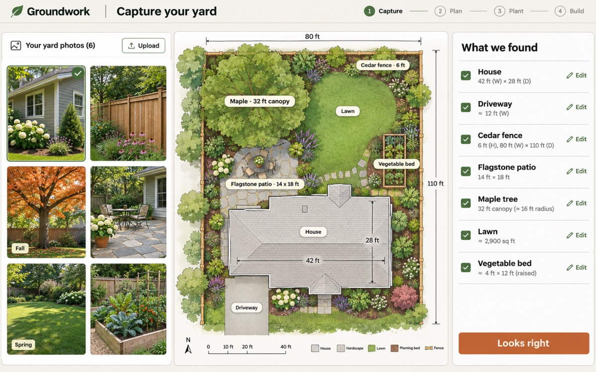
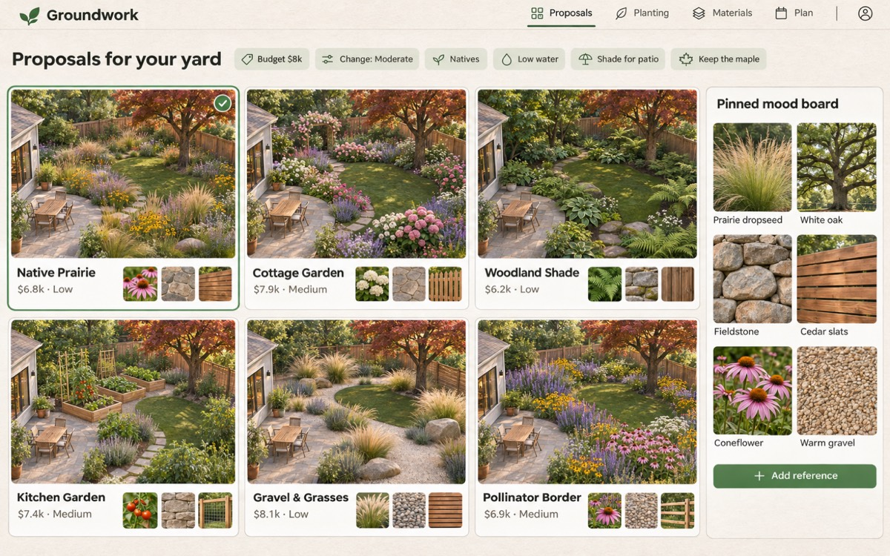
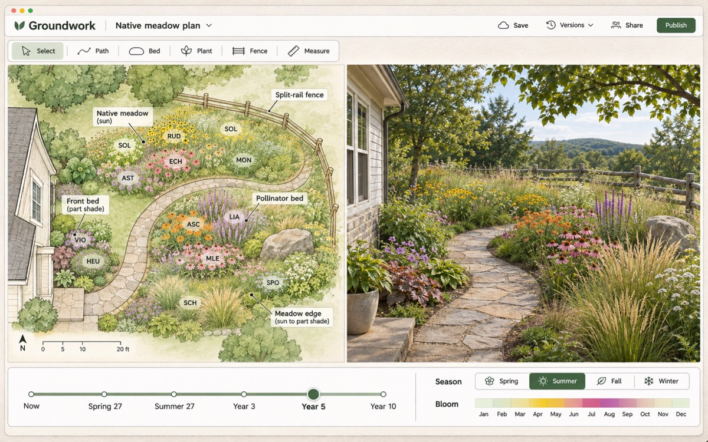

A website for Indiana homeowners. Give it your address and a few photos. It paints your whole property as a watercolor plan, suggests gardens that fit your sun and shade, shows them through the seasons and 5 years out, and gives you a planting plan you can follow.
A homeowner with a place for a garden. Older, retired, and family people who open a link. Anne is the first real user.
A desktop computer at home, with room for real controls. A phone only takes photos.
Beginners pick from options. Experienced gardeners name the plants they love, and the app designs around them.
Indiana only to start: one climate and about 100 popular Indiana plants.
The plan comes from the address and an aerial image. Photos show the look of each area. Building a 3D model from photos is a research project that would hold up the whole app.
Plant photos look repetitive. Each plant is painted with some variation, so areas look organic. The 2D plan and the 3D pane use the same art and data.
The AI picks plants, areas, and reasons. Normal code does spacing, sun checks, and plant facts, so designs are repeatable and the facts are real.
Email and password accounts and the simplest database. No payments and no listing-site integration. The map only needs to be close enough to plan with.
For one real Indiana property, go from the address to a watercolor plan with AI-marked features. Paint areas of 10 Indiana plants. Move the slider through 4 seasons and 5 years.
Do Byron and Anne recognize the yard after less than 5 minutes of fixes? Would they show the plan to a friend?
Yes: add the live 3D pane, then designs and the plan output. Map fails: switch to guided drawing. Art fails: finish the plant-art spike first.
A spike is a small throwaway prototype. Research is reading and checking sources. Each item answers one question and has a fallback if the answer is no.
The public gallery shows the garden, but hides the address and the aerial photo. Confirm or change.
These come from the first voice memo, before the question rounds. They show the direction, not the final look. The watercolor plan replaces the photo look.


